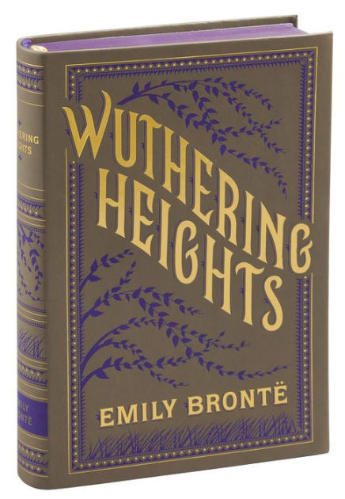

The Classics
Books within The Classics cater to the literary analyst at heart.
Connect with other scholars and literary lovers as we revisit favorites in The Classics.

Emily Bronte
Wuthering Heights is a devastatingly romantic tale, with an unrivaled focus on delving into character personalities.
Bronte tells a love story unlike any other, with characters you can practically touch. Take the time to explore or revisit this
literary classic.
Non-Fiction
Our Non-Fiction group caters to a wide-variety of interests. You can expect
a wide variety of choices, where no two topics will be the same! Join us on a
journey to learn more about the world we live in, and the people that make it.

Susan Ware
Ware uncovers and explores the lesser known stories of women who contributed to the women's suffrage movement. Find yourself
in awe of some of the simple and extraordinary measures behind the nineteen activists identified by Ware. Covering a range
of stories from cookbooks to cartoonists, be prepared to find some conversation starters hidden within this gem.
Books within The Fantastic collection fufill your adventurous fantasies.
From takes regaling medieval knights slaying dragons to cautionary tales
of fae, these books are sure to explore worlds beyond your wildest imagination.
Kate Elliott
The King's Dragon starts in a world rife with war. Follow Liath and Alain through two seemingly separate lives as they become intwined
in a conflict greater than either of them could have imagined. Set in a medieval kingdom filled with magic and mystery, watch as
the story unfolds into a masterpiece.